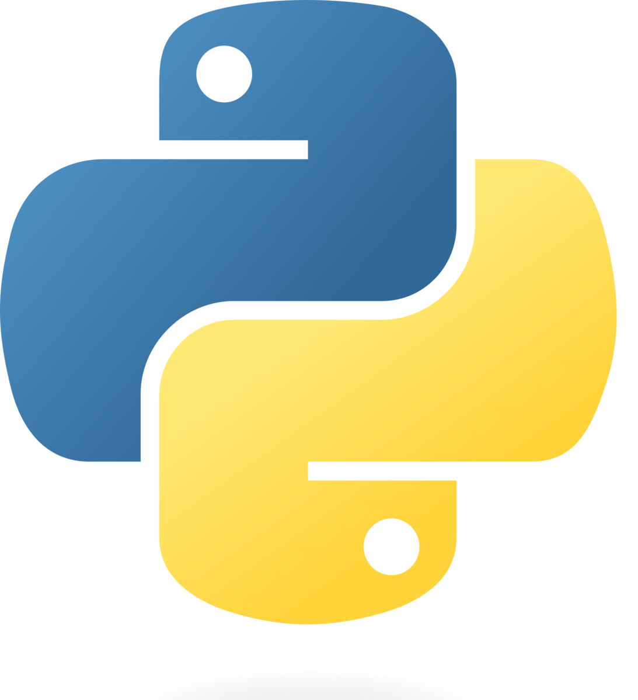

FPD - Free Text

Python es un lenguaje de programación de propósito general, interpretado y de alto nivel, creado por Guido van Rossum a finales de los años 80 en los Países Bajos. Su primera versión pública, Python 0.9.0, se publicó en el año 1991.
El nombre del lenguaje no proviene del animal, sino del grupo cómico británico “Monty Python”, cuyos programas de televisión —especialmente Monty Python’s Flying Circus— eran muy populares en aquella época. Guido van Rossum buscaba un nombre corto, original y algo humorístico, y “Python” le pareció perfecto.
Desde sus inicios, Python fue diseñado con una filosofía clara: que el código sea legible, limpio y fácil de escribir. Su lema:
“There should be one– and preferably only one –obvious way to do it.”
(“Debería haber una, y preferiblemente solo una, forma obvia de hacerlo.”)
Esta idea refleja la intención de favorecer la claridad y la simplicidad frente a la complejidad innecesaria.
Python es un lenguaje interpretado, lo que significa que su código no se compila previamente a lenguaje máquina, sino que se ejecuta línea por línea mediante un intérprete. Esto facilita la depuración y la experimentación rápida, algo muy útil para aprender y para tareas de automatización.
También es un lenguaje dinámicamente tipadoUn lenguaje de programación es dinámicamente tipado cuando el tipo de las variables se determina en tiempo de ejecución y no es necesario declararlo explícitamente al definirlas. Esto permite mayor flexibilidad, aunque puede producir errores de tipo durante la ejecución. y multiplataforma, lo que permite ejecutarlo en distintos sistemas operativos (Windows, Linux, macOS, etc.) sin apenas cambios en el código. Su sintaxis, cercana al lenguaje natural, lo convierte en una excelente opción para quienes se inician en la programación.
Actualmente, Python es uno de los lenguajes más utilizados en el mundo. Su versatilidad permite aplicarlo en campos muy diversos, entre ellos:
- 🖥️ Administración de sistemas y automatización de tareas.
- 🌐 Desarrollo web (por ejemplo, con frameworks como Django o Flask).
- 📊 Análisis de datos y ciencia de datos.
- 🤖 Inteligencia artificial y aprendizaje automático.
- 🔬 Computación científica y simulación.
- 🕹️ Desarrollo de videojuegos o aplicaciones gráficas.
Gracias a su gran comunidad y a la enorme cantidad de librerías disponiblesConjunto de módulos o funciones ya implementadas que proporcionan herramientas para realizar tareas específicas sin necesidad de programarlas desde cero. En Python, las librerías pueden ser estándar (incluidas con el lenguaje) o externas (instaladas mediante gestores como pip)., Python se ha convertido en una herramienta imprescindible tanto para programadores profesionales como para administradores de sistemas, analistas de datos o docentes.
Now it's your turn
Python es un lenguaje interpretado, dinámicamente tipado y multiplataforma. Por su versatilidad, gracias a una gran comunidad y a la enorme cantidad de librerías disponibles es uno de los lenguajes más utilizados del mundo aplicado a campos muy diversos.